Sakaiminato, Tottori: things to do, food and stays
Sakaiminato · Tottori
Sakaiminato
Highlighted on the Tottori map.
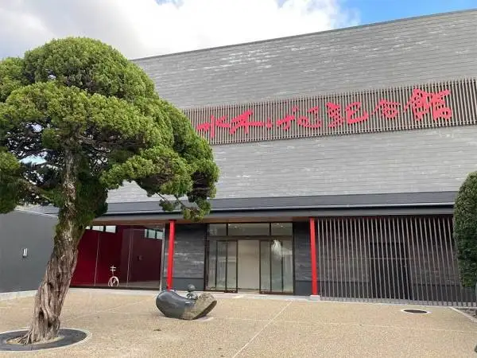
Stay
皆玉邸 恵-MEGUMI-
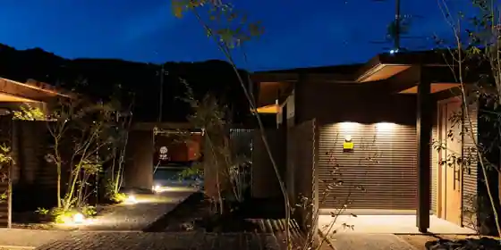
Mina Tama Tei Megumi -MEGUMI
Inn in Taisho, Sakaiminato with open-air baths.
天然温泉 夕凪の湯 御宿 野乃境港（ドーミーインチェーン）
Tennen Onsen Yunagi No Yu Onjuku No No Sakaiminato (Dormy Inn Chen)
Inn in Taisho, Sakaiminato with a large communal bath; 1-minute walk from Mizukirodomenomae!Sakaiminato Station.
REEL HOTEL
REEL HOTEL
宿屋 吉乃
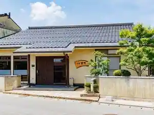
Yadoya Kitsuno
Ｄｅｓｔｉｎｙ Ｉｎｎ ＳＡＫＡＩＭＩＮＡＴＯ
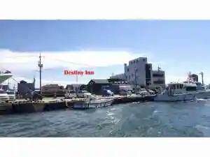
Destiny Inn SAKAIMINATO
Inn in Sakae, Sakaiminato with pet-friendly rooms.
ファミリーロッジ旅籠屋・境港店
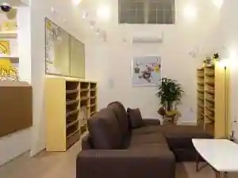
Famiri Lodge Hatago Ya Sakaiminato
Mountain lodge in Joto, Sakaiminato with breakfast available and family-friendly stays.
Destiny Seaside Village
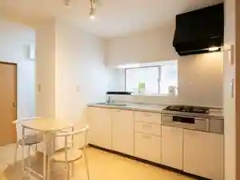
Destiny Seaside Village
Inn in Sotoe, Sakaiminato with pet-friendly rooms.
ホテルエリアワン境港マリーナ
Hotel Eriawan Sakaiminato Marina
Hotel in Araya, Sakaiminato with breakfast available.
Dining
味処 美佐
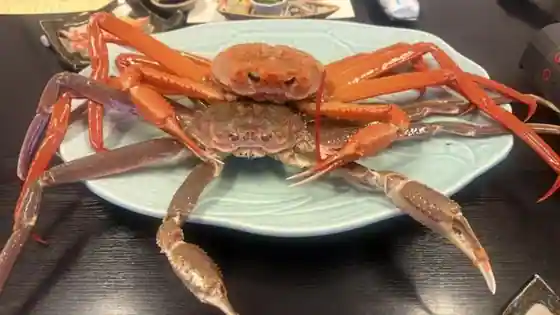
Ajidokoro Misa
妖怪食品研究所
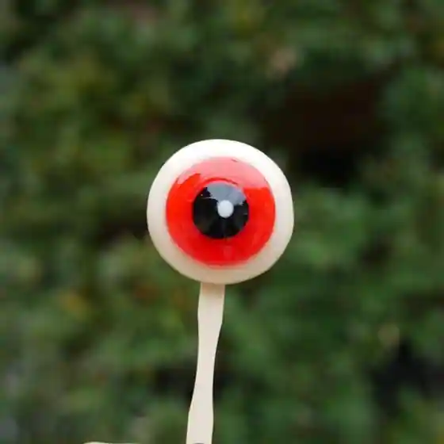
Yokai Shokuhin Kenkyusho
寿司なかよし
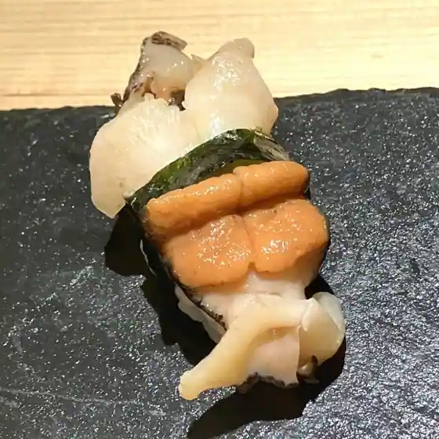
Sushi Nakayoshi
旨いもん市場 海月丸
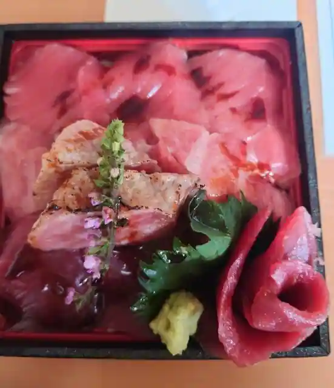
Umai Mon Shijo Kurage Maru
紅ズワイガニらぁ麺 まるはち屋
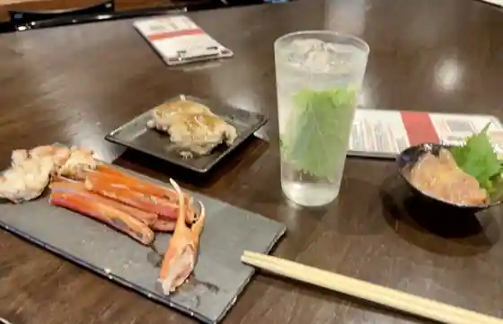
Kurenai Zuwaigani Ra Men Maruhachi Ya
山陰のお寿司ヒトトセ 境港駅前店
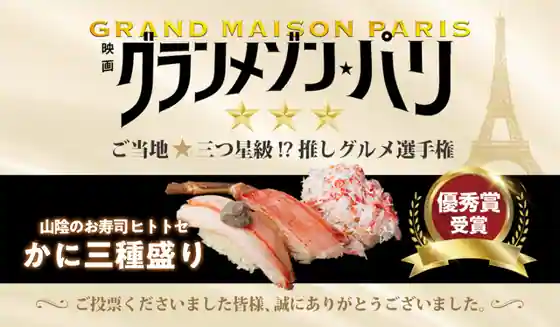
San'In No Sushi Hitotose Sakaiminato Ekimae
峰
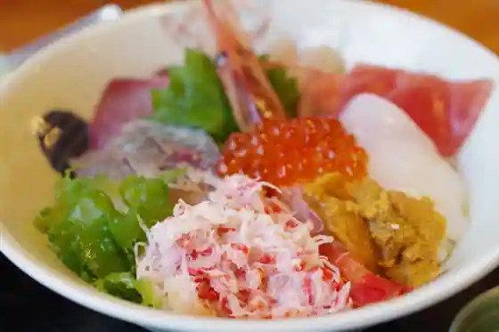
Mine
魚山亭
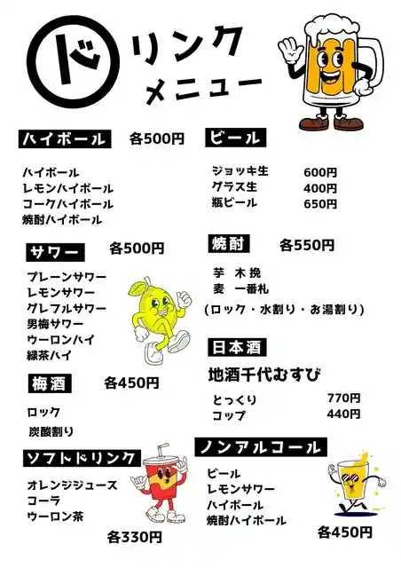
Gyosan Tei
お魚天国 すし若 境港店
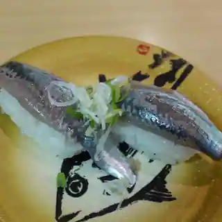
O Sakana Tengoku Sushi Jaku Sakaiminato
お食事処 海心
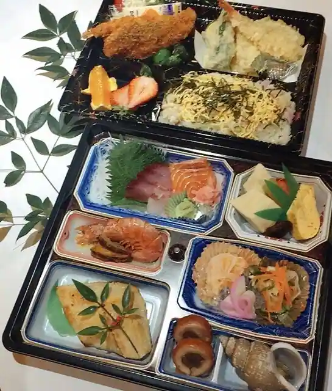
O Shokuji Tokoro Umi Kokoro
漁港回転寿司 鮨かば 境港波止場店
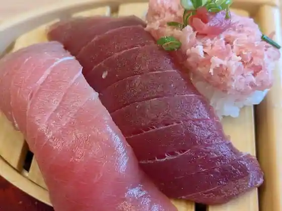
Gyoko Kaitenzushi Sushi Kaba Sakaiminato Hatoba
伯蕎庵 しばた
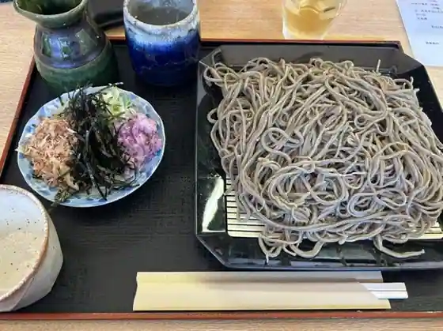
Haku Kyo Iori Shibata
和泉
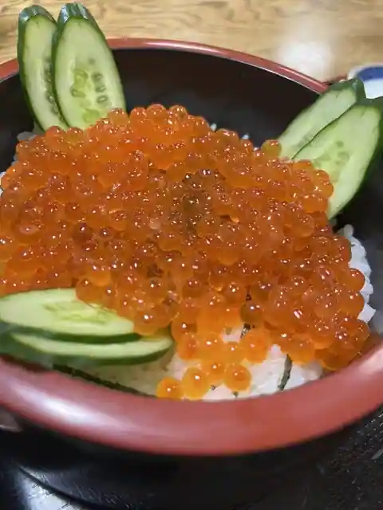
Izumi
海陽亭 境港店
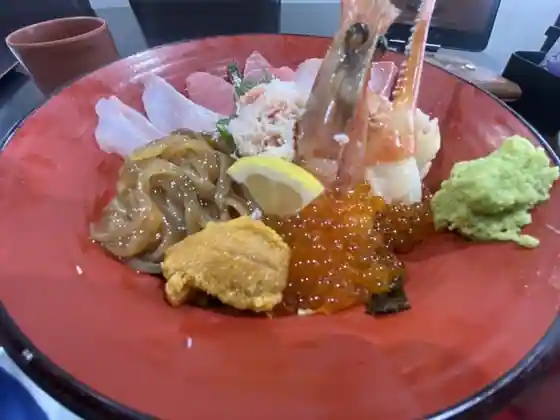
Kaiyo Tei Sakaiminato
お食事処 しんわ
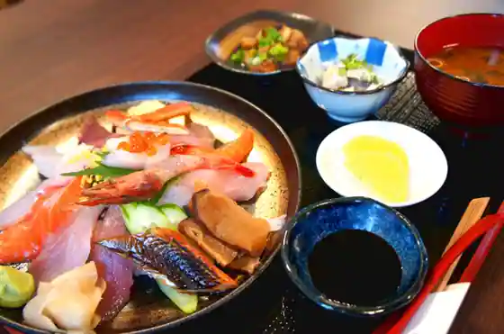
O Shokuji Tokoro Shinwa
碧と風
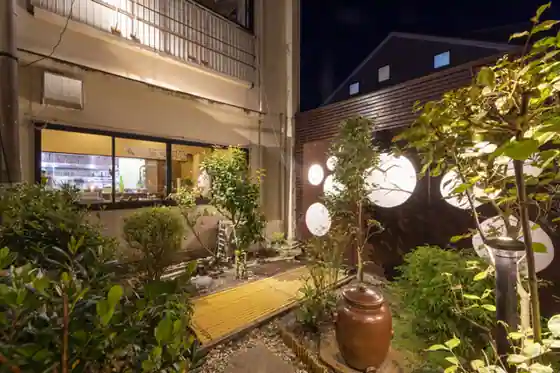
Heki To Kaze
山陰のお寿司ヒトトセ 境港本店

San'In No Sushi Hitotose Sakaiminato Hon
海鮮問屋 村上水産 鮮魚部 米子鬼太郎空港店
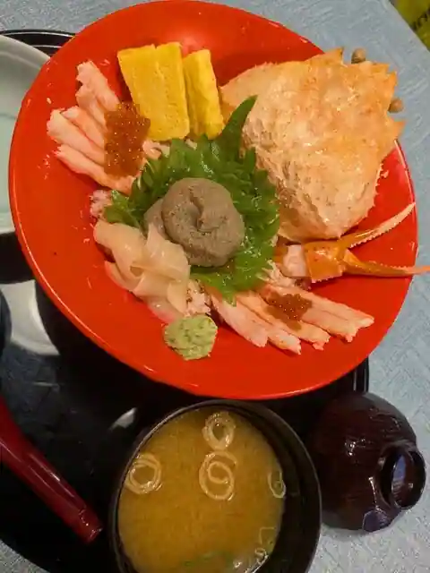
Kaisen Tonya Murakami Suisan Sengyo Bu Yonago Kitaro Kuko
境港地魚食堂 魚倉
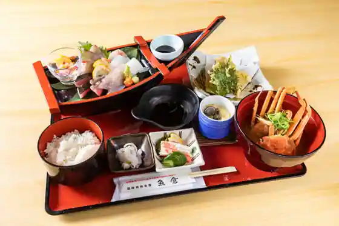
Sakaiminato Jizakana Shokudo Gyoso
お食事処 さかゑや
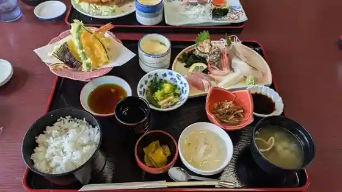
O Shokuji Tokoro Sakaeya
富んや
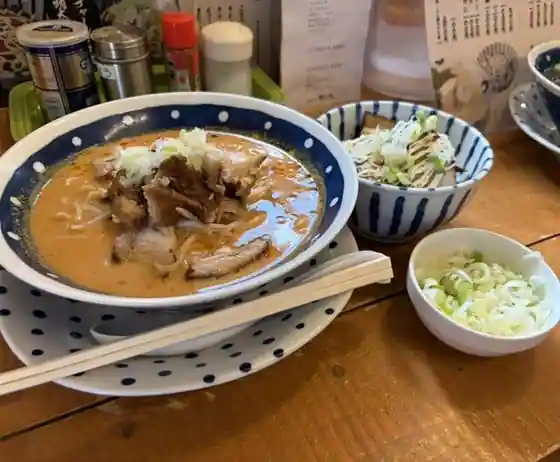
Ton Ya
妖怪饅頭 総本店
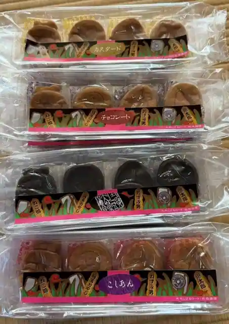
Yokai Manju So Hon
三光水産
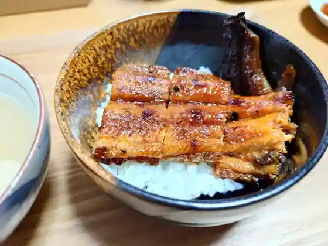
Sanko Suisan
境港のさかな塾
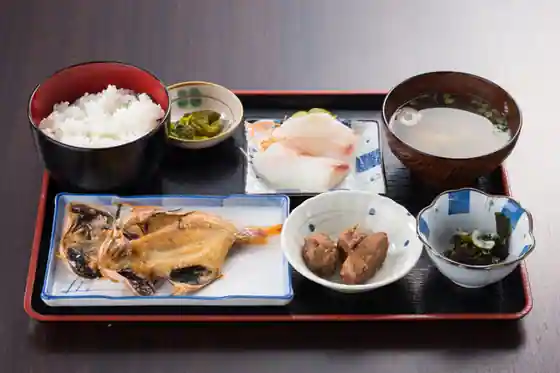
Sakaiminato Nosakana Juku
Sights
Ejima Ohashii Beta Fumi Saka
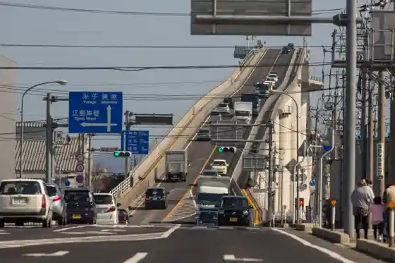
Sakaiminato Suisambutsu Chokubai Center
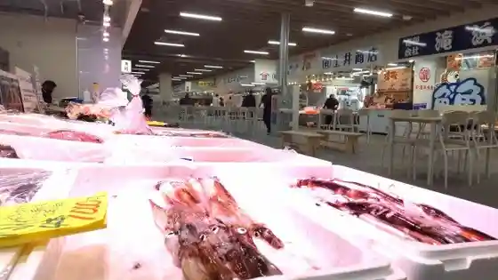
Mizuki Shigeru Rodo Yokai Sutanpurarii
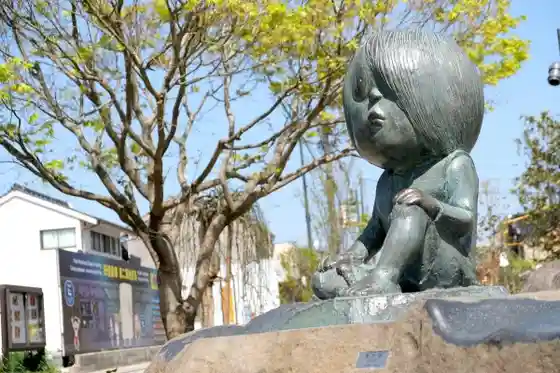
Sakai Gyoko Kengaku Tour
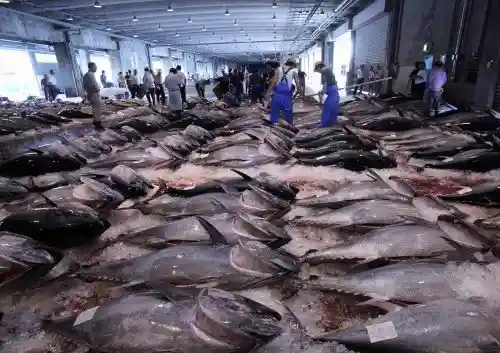
Yume Minato Tawa Yume Minato Park
Tairyo City Ba Nakaura
Sakai Daiba Ato Sakai Daiba Park
Minato Onsen (Ho no Kami)
Umi Tokurashi no Shiryo Kan
Mizuki Shigeru Memorial Museum
Sakaiminato Yakusho